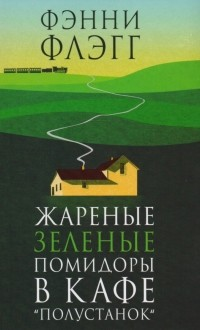
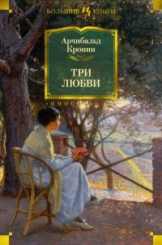
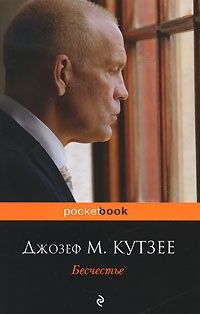

- Фэнни Флэг "Жареные зеленые помидоры в кафе "Полустанок"

- "Если вы меня спросите, в каком году такой-то ли такой-то женился, на ком женился и в чем была мать невесты, я в девяти случаях из десяти отвечу правильно. Но хоть убей, никак не могу вспомнить, когда же я успела так состарится. Как-то неожиданно все получилось: раз — и уже старуха."
- " Жаль, Руфь, что ты не видела, как этот здоровый бугай, пьяный как собака, три дня подряд ревел у реки не хуже ребенка, когда умер Джо, старый негр, который его вырастил. Клянусь, я не понимаю, почему люди перестали использовать свой мозг по назначению. Ты только подумай: этим ребятам противносесть за стол с черным, но зато они преспокойно едят яйца, вылезшие прямо из куриной задницы"
- "Милочка моя, ненависть ни к чему хорошему не приведет. Она превратит ваше сердце в горень горечавки. Люди не могут перестать быть тем, что они есть, как скунс не может перестать быть скунсом. Как вы думаете, неужели, будь у них возможность, они бы изменились? Непременно изменились бы. Но человек слаб"
- Арчибальд Кронин "Три любви"

- "Однажды в Италии, где я много лет провела в монастыре нашего ордена, был такой случай. Там жил архиепископ, по возрасту отошедший от дел, очень старый праведный человек. Вдруг он заболевает. И что же? Он не восклицает: «Я слишком стар! Но я верую, так дайте мне умереть, чтобы вкусить великое счастье пребывания с Богом!» Нет-нет! Он требует врача и специалистов. Назначена операция. Да, он соглашается на лечение. И поправляется. И он доволен, очень доволен и возносит благодарственные молитвы. Удивительно, правда?"
- "Хотя Люси не считала себя мученицей, на самом деле ее как будто подвергали гонениям – и этим преследователем была она сама. Ее путь к цели был каторжным; она приносила себя в жертву любви. Одержимость Люси доставляла ей немало страданий. Она действительно страдала, понимая, что ее несокрушимость – это самовнушение, а терпения может не хватить."
- "В далеких разрывах облаков засияло несколько ранних звезд, будто кто-то проколол дырочки в темном занавесе"
- Джозеф М. Кутзее

- "Мы все, когда нас хватают за руку, просим прощения. Тут мы преисполняемся глубоких сожалений о содеянном. Вопрос же не в том, сожалеем мы или нет. Вопрос в том, какой урок мы извлекли из случившегося. Вопрос в том, что мы станем делать теперь, переполнясь такими сожалениями."
- "Мы живем в эпоху пуританизма. Личная жизнь стала всеобщим достоянием. А зудливое любопытство к ней обрело респектабельность — любопытство и сентиментальность. Людям нужен спектакль: биение кулаками в грудь, раскаяние, по возможности слезы. В общем и целом, телевизионное шоу. Я им такого одолжения не сделал."
- "Если ты сейчас не постоишь за себя, ты никогда больше не сможешь высоко держать голову."